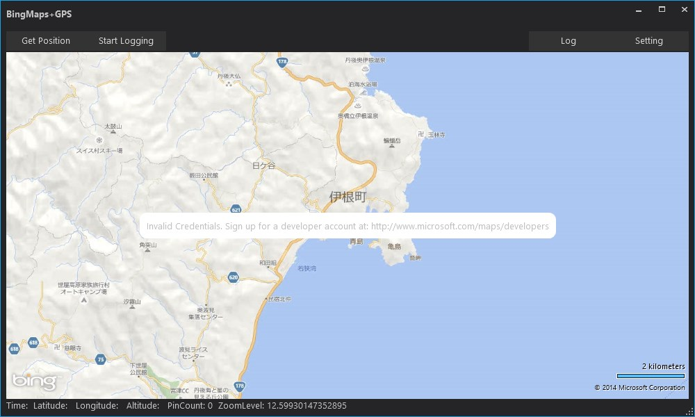
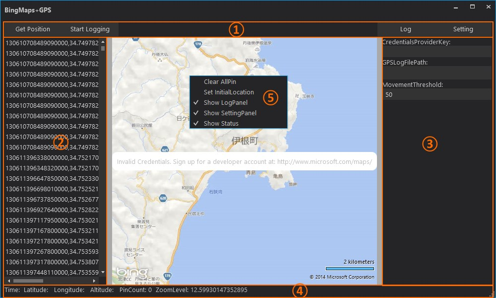

BingMapsを利用したGPSロガーアプリケーション| OS | Windows 7/8.1 |
GPS情報の取得は、7以降に搭載されたセンサーAPIを利用しています。
そのため、VistaについてはGPS機能が動作しません。 楽しいWindows 7アプリ作成入門（2）：Windows 7でセンサや位置情報を使うアプリを作ろう - ＠IT http://www.atmarkit.co.jp/ait/articles/1004/14/news101.html GeoCoordinateWatcher クラス (System.Device.Location) http://msdn.microsoft.com/ja-jp/library/system.device.location.geocoordinatewatcher(v=vs.110).aspx 8については、おそらく動作すると思いますが、実機テストを行っていません。 |
| .NET Framework 4.5.1 | ||
| GPS | 内蔵型以外にも外部接続型でも可。 |
外部接続型については、ドライバがセンサーAPI対応のものであることが必要です。
もし付属のドライバがセンサーAPIに対応していない場合は、COMポート出力をセンサーAPIにバイパスする下のようなドライバが必要です。 Welcome to GPSDirect and GPSReverse GPS NMEA Windows 7 Windows 8 Windows 10 Sensor Driver iOS Android TCP http://www.turboirc.com/gps7/ |

| ① | ボタンパネル | |
| Get Position | 現在地の表示を行います。 | |
| Start Logging | 移動記録の開始と終了を実行します。 | |
| Log | StartLoggingで記録されたファイルを読み込み、その記録内容を②のログパネルに表示します。 | |
| Setting | ③設定パネルを表示します。 | |
| ② | ログパネル | 移動記録をリスト表示します。 |
| ③ | 設定パネル | |
| CredentialsProviderKey |
BingMapsのライセンスキーを設定します。
キーを設定することで地図上に表示されている「Invalid Credentials. Sign up for a developer account at...」の表示を非表示にすることができます。 Home - Bing Maps Account Center https://www.bingmapsportal.com/ |
|
| GPSLogFilePath |
移動記録するファイルパスを設定します。
（設定しないときはアプリケーションの実行ディレクトリ内にgps.logという名前で保存されます。） |
|
| MovementThreshold |
移動記録するときの間隔を設定します。
（10～1000メートル） |
|
| ④ | ステータスパネル | |
| Time | 現在地を取得した時刻を表します。 | |
| Latitude | 緯度を表します。 | |
| Longitude | 経度を表します。 | |
| Altitude | 高度を表します。 | |
| PinCount | 地図に表示しているピンの総数を表します。 | |
| ZoomLevel | 地図のズームレベルを表します。 | |
| ⑤ | コンテキストメニュー | |
| Clear AllPin | 地図に表示している全てのピンをクリアします。 | |
| Set InitialLocation | 起動時の地図の表示位置をメニューを開いた場所に設定します。 | |
| Show LogPanel | ②ログパネルの表示・非表示を切り替えます。 | |
| Show SettingPanel |
③設定パネルの表示・非表示を切り替えます。
（①Setting ボタンと同じです。） |
|
| Show Status | ④ステータスパネルの表示・非表示を切り替えます。 |